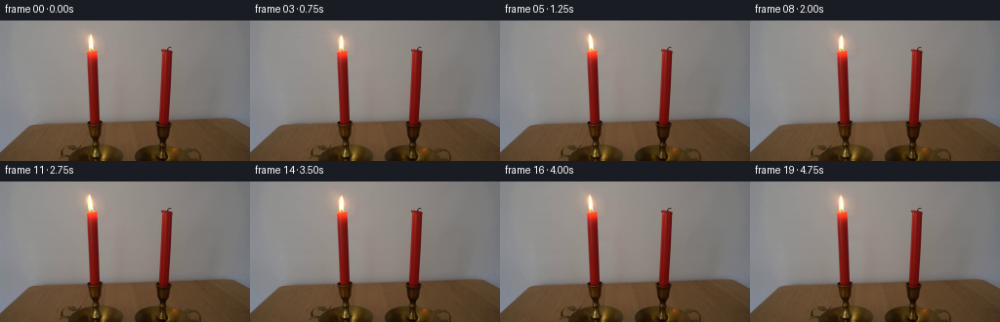
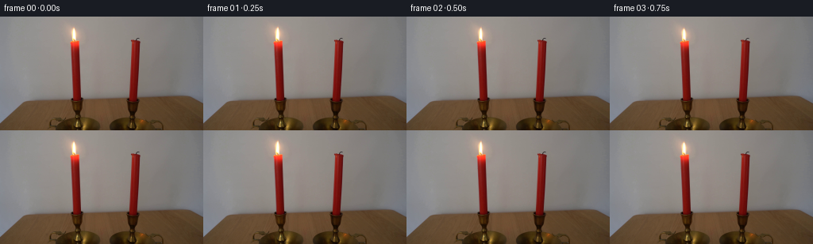
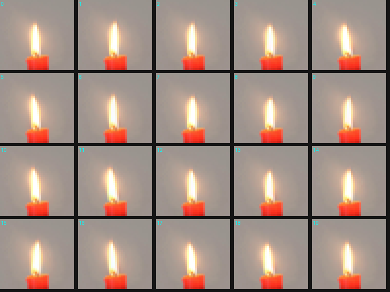

CODING AGENTS AS PIXEL WORLD MODELS
traex/GPT-5.6-Sol · 0092
点击播放 · 原生 RGB 像素
逐轮保存的候选
回放视频、检查图与代码变化。
每份候选均可单独播放。实际图片检查记录在下方工具轨迹中。
候选 01播放与检查图
点击播放 · 原生 RGB 像素


展开代码变化
--- 上一保存版本
+++ 本次保存版本
@@ -0,0 +1,132 @@
+"""Generate the locked-off candle demonstration video.
+
+The supplied photograph is retained as the plate. Only the left flame and
+the very local light cast by it are animated. The flame is taken from the
+photograph itself, separated from a softly inpainted wall plate, and then
+subjected to a small anchored, non-rigid warp. This keeps the photographic
+texture and exposure of the input instead of replacing the flame with a
+cartoon drawing.
+"""
+
+from pathlib import Path
+
+import cv2
+import numpy as np
+from PIL import Image
+
+import artifact_io
+
+
+W, H = 256, 144
+N_FRAMES = 20
+
+
+def make_clean_plate(source: np.ndarray) -> tuple[np.ndarray, np.ndarray]:
+ """Return a flame-free plate and its signed photographic flame layer."""
+ # The polygon closely surrounds the luminous body, but stops above the
+ # candle's red top so that neither the wick nor wax ever drifts.
+ hard = np.zeros((H, W), np.uint8)
+ polygon = np.array(
+ [[93, 10], [96, 13], [100, 20], [100, 26], [98, 30],
+ [96, 31], [90, 30], [87, 26], [88, 19], [91, 13]],
+ np.int32,
+ )
+ cv2.fillPoly(hard, [polygon], 255)
+
+ # Telea inpainting produces the smooth, slightly warm wall that is hidden
+ # behind the original flame. A broader inpaint support avoids carrying a
+ # bright white remnant into later flame shapes.
+ support = cv2.dilate(hard, np.ones((3, 3), np.uint8), iterations=1)
+ inpainted = cv2.inpaint(source, support, 4.0, cv2.INPAINT_TELEA)
+
+ # Feathering is important at this tiny image size. With an identity warp,
+ # clean + layer reconstructs the input photograph exactly (up to float
+ # rounding), while the edge remains soft under motion.
+ feather = cv2.GaussianBlur(hard.astype(np.float32) / 255.0, (0, 0), 1.15)
+ feather = np.clip(feather * 1.12, 0.0, 1.0)[..., None]
+ src = source.astype(np.float32)
+ clean = src * (1.0 - feather) + inpainted.astype(np.float32) * feather
+ layer = src - clean
+ return clean, layer
+
+
+def warp_flame(layer: np.ndarray, frame_index: int) -> np.ndarray:
+ """Warp the extracted flame while keeping its base fixed on the wick."""
+ t = frame_index / 4.0
+ # Several incommensurate, low-amplitude terms mimic turbulent flicker
+ # without producing a repetitive pendulum motion.
+ top_shift = (
+ 1.45 * np.sin(2.0 * np.pi * 0.63 * t + 0.20)
+ + 0.58 * np.sin(2.0 * np.pi * 1.37 * t + 1.05)
+ + 0.25 * np.sin(2.0 * np.pi * 2.11 * t + 2.20)
+ )
+ scale_y = 1.0 + 0.048 * np.sin(2.0 * np.pi * 0.83 * t + 0.35)
+ scale_x = 1.0 + 0.060 * np.sin(2.0 * np.pi * 1.09 * t + 1.70)
+ curl = 0.42 * np.sin(2.0 * np.pi * 1.71 * t + 0.55)
+
+ anchor_x, anchor_y = 94.0, 30.7
+ yy, xx = np.mgrid[0:H, 0:W].astype(np.float32)
+
+ # Inverse of the anchored deformation. v is zero at the wick and one at
+ # approximately the flame tip, so lateral motion grows toward the tip.
+ src_y = anchor_y - (anchor_y - yy) / scale_y
+ v = np.clip((anchor_y - src_y) / 20.0, 0.0, 1.35)
+ bend = top_shift * np.power(v, 1.32) + curl * np.sin(np.pi * np.clip(v, 0, 1))
+ src_x = anchor_x + (xx - anchor_x - bend) / scale_x
+ src_x = src_x.astype(np.float32)
+ src_y = src_y.astype(np.float32)
+
+ warped = cv2.remap(
+ layer,
+ src_x,
+ src_y,
+ interpolation=cv2.INTER_CUBIC,
+ borderMode=cv2.BORDER_CONSTANT,
+ borderValue=(0, 0, 0),
+ )
+
+ # Flame luminosity fluctuates by only a few percent; enough to read at
+ # 4 fps, but not enough to look like an electric light switching on/off.
+ intensity = (
+ 1.0
+ + 0.045 * np.sin(2.0 * np.pi * 1.21 * t + 0.10)
+ + 0.018 * np.sin(2.0 * np.pi * 2.37 * t + 1.30)
+ )
+ return warped * intensity
+
+
+def local_illumination(frame_index: int) -> np.ndarray:
+ """A very subtle warm breathing of wall light immediately around flame."""
+ t = frame_index / 4.0
+ pulse = (
+ 1.45 * np.sin(2.0 * np.pi * 0.91 * t + 0.15)
+ + 0.55 * np.sin(2.0 * np.pi * 1.73 * t + 1.0)
+ )
+ yy, xx = np.mgrid[0:H, 0:W].astype(np.float32)
+ # Elliptical falloff, centered slightly above the luminous body.
+ r2 = ((xx - 93.5) / 28.0) ** 2 + ((yy - 23.0) / 31.0) ** 2
+ falloff = np.exp(-2.1 * r2)[..., None]
+ warm = np.array([1.0, 0.56, 0.25], np.float32)
+ return pulse * falloff * warm
+
+
+def generate() -> np.ndarray:
+ root = Path(__file__).resolve().parent
+ source = np.asarray(Image.open(root / "first_frame.png").convert("RGB"), dtype=np.uint8)
+ if source.shape != (H, W, 3):
+ raise ValueError(f"Unexpected first-frame shape: {source.shape}")
+
+ clean, flame_layer = make_clean_plate(source)
+ frames = np.empty((N_FRAMES, H, W, 3), dtype=np.uint8)
+ frames[0] = source # generation contract: byte-for-byte pixel identity
+
+ for i in range(1, N_FRAMES):
+ image = clean + warp_flame(flame_layer, i) + local_illumination(i)
+ frames[i] = np.clip(np.rint(image), 0, 255).astype(np.uint8)
+ return frames
+
+
+if __name__ == "__main__":
+ case_dir = Path(__file__).resolve().parent
+ artifact_io.save(generate(), case_dir)
+
可观测工具轨迹
实际执行的命令与返回图片。
命令 1exit 0
/bin/bash -lc "cat prompt.txt && printf '\\n---RULES---\\n' && cat GENERATION_RULES.md"
命令 2exit 1
/bin/bash -lc "find . -maxdepth 2 -type f -printf '%p\\n' | sort && printf '\\nTOOLS\\n' && command -v ffmpeg && command -v python3"
命令 3exit 0
/bin/bash -lc "sed -n '1,240p' artifact_io.py"
命令 4exit 0
/bin/bash -lc "python3 - <<'PY' mods=['PIL','numpy','cv2','imageio','scipy'] for m in mods: try: x=__import__(m); print(m,'ok',getattr(x,'__version__','')) except Exception as e: print(m,'NO',e) PY"
命令 5exit 0
/bin/bash -lc "python3 - <<'PY'
from PIL import Image
im=Image.open('first_frame.png')
im.crop((72,4,114,47)).resize((420,430)).save('.tmp/flame_zoom.png')
PY"命令 6exit 0
/bin/bash -lc "python3 - <<'PY'
from PIL import Image
import numpy as np
im=np.array(Image.open('first_frame.png'))
for y in range(6,36,2):
print('y',y,[(x,tuple(im[y,x])) for x in range(82,106,3)])
PY"命令 7exit 1
/bin/bash -lc "python3 generate.py && python3 - <<'PY'
from PIL import Image
import numpy as np
im=np.array(Image.open('first_frame.png').convert('RGB'))
f0=np.array(Image.open('frames/00.png'))
print('first identical',np.array_equal(im,f0),'maxdiff',np.abs(im.astype(int)-f0).max())
z=np.load('pixels.npz')['pixels']
print('packed shape',z.shape,z.dtype)
for i in range(1,20):
f=np.array(Image.open(f'frames/{i:02d}.png'))
d=np.abs(f.astype(int)-im.astype(int))
ch=np.any(d>0,axis=2)
ys,xs=np.where(ch)
print(i, 'changed',ch.sum(),'bbox', (xs.min(),ys.min(),xs.max(),ys.max()),'mean',d[ch].mean(),'max',d.max())
PY"命令 8exit 0
/bin/bash -lc "python3 generate.py && python3 - <<'PY'
from PIL import Image
import numpy as np
im=np.array(Image.open('first_frame.png').convert('RGB'))
f0=np.array(Image.open('frames/00.png'))
print('first identical',np.array_equal(im,f0),'maxdiff',np.abs(im.astype(int)-f0).max())
z=np.load('pixels.npz')['pixels']
print('packed shape',z.shape,z.dtype)
for i in range(1,20):
f=np.array(Image.open(f'frames/{i:02d}.png'))
d=np.abs(f.astype(int)-im.astype(int))
ch=np.any(d>0,axis=2)
ys,xs=np.where(ch)
print(i, 'changed',ch.sum(),'bbox', (xs.min(),ys.min(),xs.max(),ys.max()),'mean',round(d[ch].mean(),2),'max',d.max())
PY"命令 9exit 0
/bin/bash -lc "python3 - <<'PY'
from PIL import Image,ImageDraw
S=Image.new('RGB',(5*160,4*150),(20,20,20))
for i in range(20):
im=Image.open(f'frames/{i:02d}.png').crop((75,2,113,38)).resize((152,144),Image.Resampling.NEAREST)
x=(i%5)*160;y=(i//5)*150
S.paste(im,(x,y));ImageDraw.Draw(S).text((x+2,y+2),str(i),fill='cyan')
S.save('.tmp/flames.png')
PY"视觉工具实际返回图片 1

视觉工具实际返回图片 2
视觉工具实际返回图片 3

视觉工具实际返回图片 4

保存候选 1 份；完成命令 9 次；可验证图片返回 4 张。原始 API 响应与完整日志保留在本地。